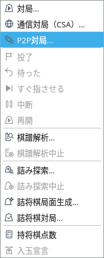
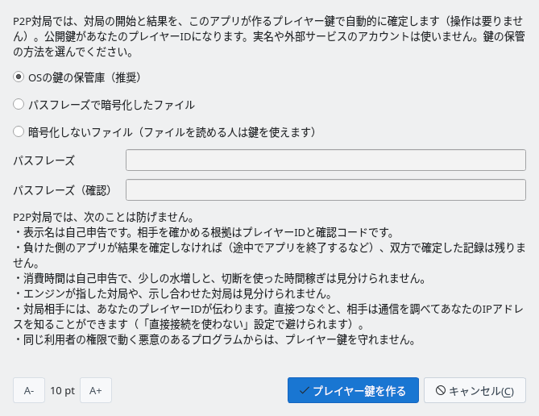
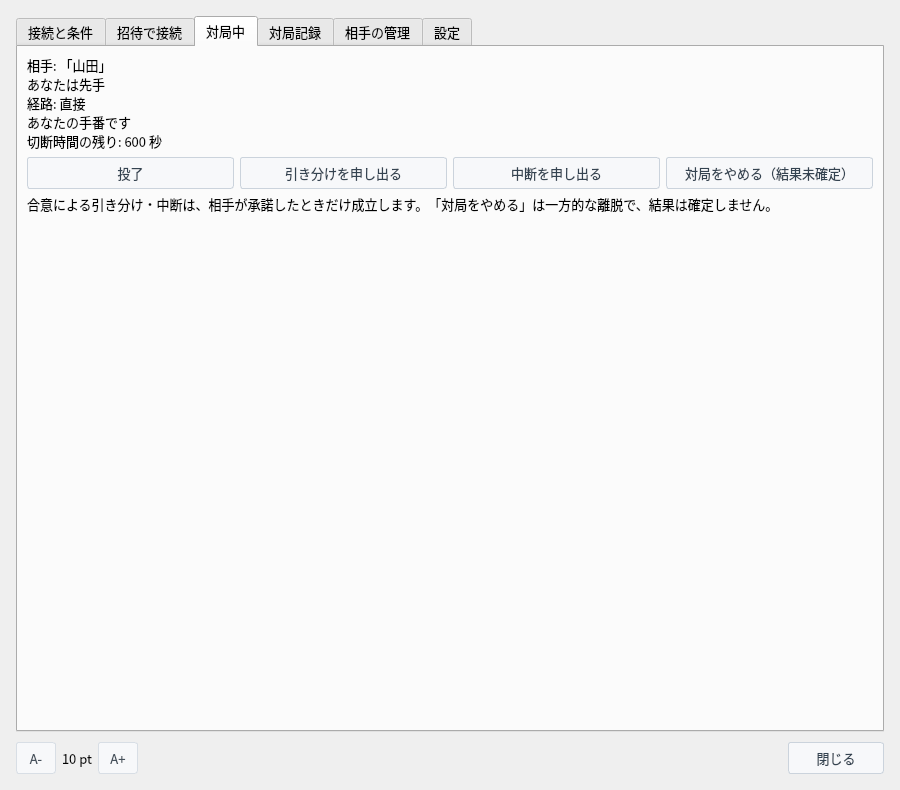
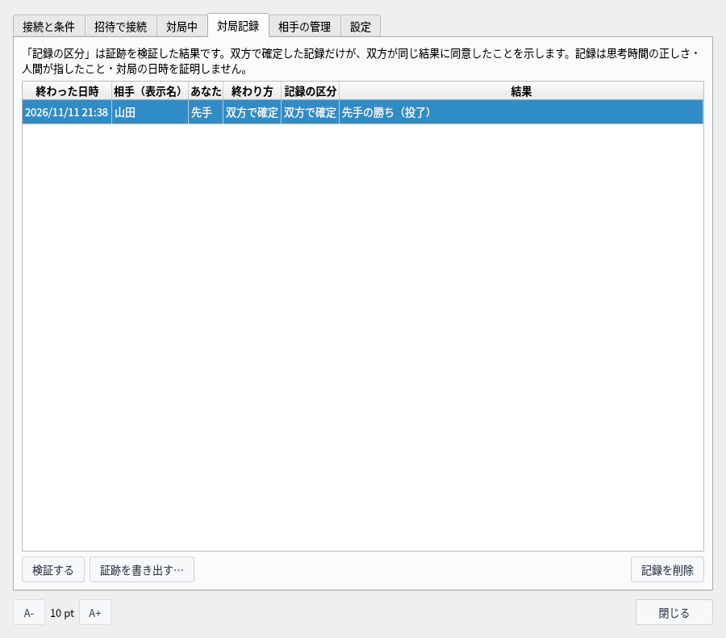
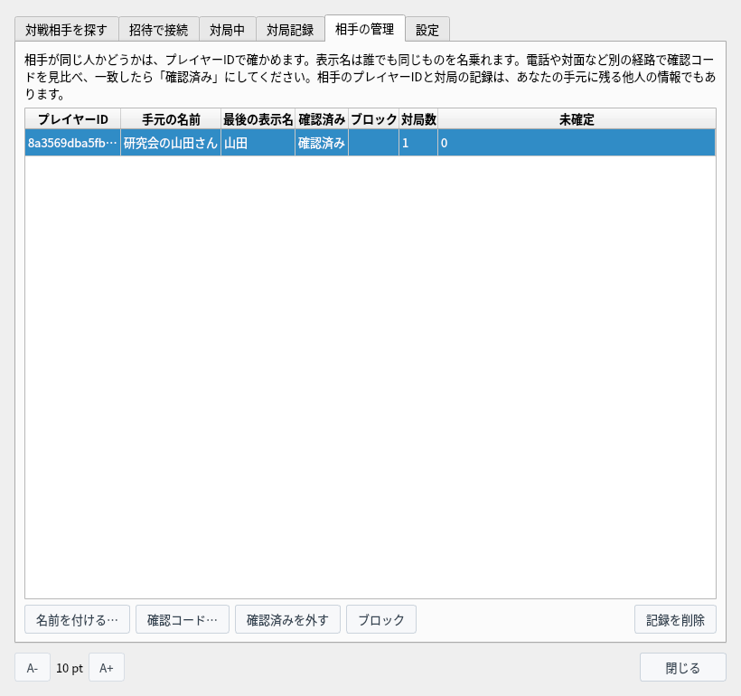
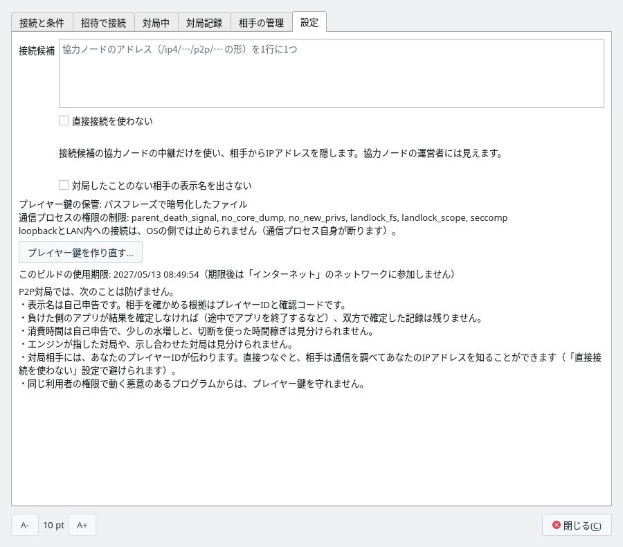
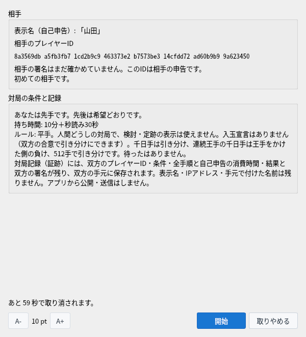
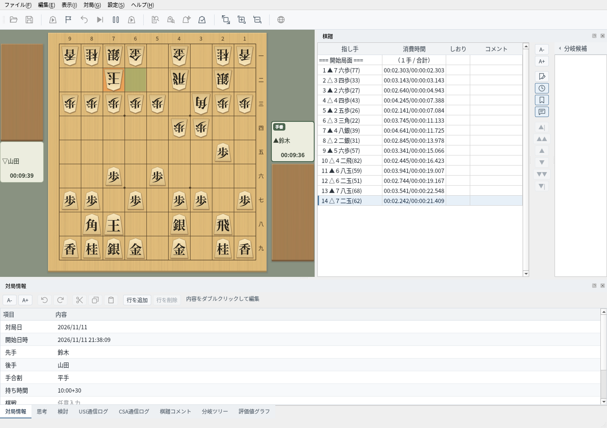

P2P対局（実験版）
対局サーバーを使わずに相手と直接つないで指し、開始と結果を双方で確定した対局記録を手元に残します
試験中の機能です。画面や決まりは今後変わることがあります。
P2P対局とは
P2P対局を有効にしてビルドした将棋盤Qだけにある、試験中の対局の機能です
P2P対局では、CSA通信対局のような対局サーバーを使わず、自分と相手のアプリが直接つながって指します（直接つなげないときは協力ノードの中継を通りますが、協力ノードは対局サーバーにはなりません。2）。対局の相手は、招待文字列を渡して決めます。知り合いどうしで指すための機能で、不特定の相手を探す公開の募集はありません。
対局の開始と結果は、このアプリが作るプレイヤー鍵で、双方のアプリが自動的に確定します（操作は要りません）。プレイヤー鍵の公開鍵が、あなたの「プレイヤーID」です。実名や外部サービスのアカウントは使いません。対局が終わると、双方で確定した対局記録（証跡）が双方の手元に保存され、だれでも検証できます。
直接つなげないときは、通信が自分のアプリから協力ノードを経て相手のアプリへ届きます。経路はCSA通信対局のサーバーを通るときと似ていますが、協力ノードは暗号化したままの通信を受け渡すだけです。中継を通っていても対局の相手は相手のアプリで、指し手の確認も結果の確定も双方のアプリが行います。
| 項目 | CSA通信対局の対局サーバー | P2P対局の協力ノード（中継のとき） |
|---|---|---|
| 指し手が合法か | サーバーが判定します | 判定しません。双方のアプリがそれぞれ確かめます |
| 持ち時間 | サーバーが計ります | 計りません。双方のアプリが自分の消費時間を申告し、相手のアプリが測った時間と照らし合わせます |
| 勝敗・終局 | サーバーが決めて知らせます | 決めません。双方のアプリが棋譜から決め、プレイヤー鍵で確定します |
| 対局記録 | サーバーにも残せます | 残しません。双方のアプリにだけ保存します |
| 通信の中身 | サーバーが指し手を受け取り、相手へ送ります | 読めません。指し手・プレイヤーID・表示名は、双方のアプリの間で暗号化したまま通します |
| 対局の組み合わせ | サーバーが組み合わせます | 組み合わせません。相手は招待で決まります |
協力ノードの運営者に見えるのは、IP アドレスと、どの IP どうしがつないだかです（相手やネットワークに見える情報）。協力ノードは中継する通信を止めたり遅らせたりはできますが、中身は書き換えられません（書き換えた通信は暗号の検査で見つかり、アプリが受け付けません）。通信が止まったときは、回線が切れたときと同じ扱いになります（回線が切れたとき）。
中継でつながった後も、双方のアプリは直接の接続への切り替えを試します。切り替わると協力ノードを通らなくなり、「対局中」タブの「経路」が「直接」に変わります。どちらかが「直接接続を使わない」にしているときは切り替えず、対局の間ずっと中継を通ります。
P2P対局は2人で指す1対1の対局で、1つのアプリが同時に持てる対局は1つだけです。これは協力ノードを使っても使わなくても同じです。協力ノードは到達性の確認と中継をするだけで、対局の組み合わせを決めたり、1つのアプリで何局も指せるようにしたりはしません。
| 場合 | 協力ノードなし | 協力ノードあり |
|---|---|---|
| 7人を招待する | 指せるのは一度に1局です。最初につないできた1人と対局し、ほかの人は「相手は今、ほかの相手と交渉中か対局中です。」と断られます。7人と指すには、対局が終わるたびに次の人へ新しい招待文字列を渡して、1人ずつ順に指します。 | 協力ノードなしと同じで、指せるのは一度に1局です。 |
| 8人で同時に4局 | 4組それぞれで、片方が招待文字列を作って相手に渡します。同じLANの中なら、組ごとに別々につながるので、4局を同時に指せます（1台のPCでもアプリを8つまで動かせます）。 | 4組それぞれで、片方が相手を招待します。4組とも同じ協力ノードを使えます（1つの協力ノードの中継は、同時に128人まで）。 |
同時に有効にできる招待文字列は4つまでなので、7人分を作ると、最初の3つは使えなくなります。招待された人どうしを組み合わせる機能（大会の運営など）や、観戦の機能はありません。招待の決まりは招待できる人数と回数をご覧ください。
P2P対局は試験中の機能で、配布している ShogiBoardQ には入っていません。使うには、ソースからビルドするときに CMake で -DENABLE_P2P_PLAY=ON を付けます（libsodium と Rust が必要です。ビルドの手順はLinux ビルド・リリース手順）。
- 対応OS：今は Linux だけです。通信を受け持つプロセス（shogiboardq-peer）の権限を OS の機能で制限できない環境では使えません。
- ネットワーク：「ローカル検証用（同じPC・同じLAN）」と「限定試験用」の2つです。使い分けは2つの対局のしかたをご覧ください。
- 協力ノード：インターネット越しの対局（限定試験用）には、最初につなぐ相手になる協力ノードが1つ要ります（協力ノードを使って対局する）。同じPC・同じLANの対局には要りません（協力ノードなしで対局する）。
- 使用期限：ビルドした日から180日を過ぎると、限定試験用のネットワークに参加しません。ローカル検証用と、保存した記録の確認・検証は期限後も使えます。
- 自動化 API：
--automationを付けて起動したときは、P2P対局は使えません。
| 項目 | 決まり |
|---|---|
| 手合・対局者 | 平手だけです。人間どうしの対局で、対局中は検討・詰み探索・棋譜解析・定跡の表示を使えません。 |
| 持ち時間 | 持ち時間（分）と秒読み（秒）。消費時間は双方が自己申告し、相手が測った時間と照らし合わせます。 |
| 先後 | 招待した側の希望どおりにします。「指定なし」なら双方の乱数で決めます。 |
| 終局 | 投了・詰み・時間切れ・千日手（引き分け）・連続王手の千日手（王手をかけた側の負け）・512手到達（引き分け）・合意による引き分け・合意による中断。 |
| ないもの | 待ったと入玉宣言はありません（入玉は双方の合意で引き分けにできます）。 |
2つの対局のしかた
相手がどこにいるかで、協力ノードを使うかどうかが決まります。それぞれの手順は別のページで説明します
協力ノードなしで対局する
同じPC・同じLANの相手と、招待文字列だけでつないで指します。協力ノードも「設定」タブの変更も要りません。招待できる人数と回数、ファイアウォールの設定もこのページです。
詳しく見る →協力ノードを使って対局する
インターネット上の相手と、協力ノードを通して指します。だれが協力ノードを起動するか、起動のしかた、IP アドレスを相手に見せない設定もこのページです。
詳しく見る →| 項目 | 協力ノードなし | 協力ノードを使う |
|---|---|---|
| 対局できる相手 | 同じPC・同じLANの相手 | インターネット上の相手（別の家・別の回線） |
| 「ネットワーク」 | ローカル検証用（同じPC・同じLAN） | 限定試験用 |
| 協力ノード | 要りません | 1つ要ります（だれかが起動し、2人ともアドレスを入れます） |
| 「設定」タブ | 変えなくてかまいません | 「接続候補」に協力ノードを入れます |
| 招待文字列に入る宛先 | このPCのLANの中のアドレス（192.168.… など） | 協力ノードを経由する宛先（外から直接届くPCなら、インターネット上の IP アドレスも） |
| 相手に見えるアドレス | LANの中のアドレスだけ | 直接つなぐと、インターネット上の IP アドレス（「直接接続を使わない」で隠せます） |
| 使用期限 | ありません | ビルドから180日 |
2つのネットワークどうしはつながりません。対局する2人は、同じネットワークを選んで接続します。
準備
P2P対局のウィンドウを開き、プレイヤー鍵を作ってネットワークに接続します
メニューバーの「対局」から「P2P対局（実験版）…」を選ぶと、P2P対局のウィンドウが開きます。ウィンドウは開いたままでも盤や棋譜を操作できます。


「対局」メニュー：「P2P対局（実験版）…」でウィンドウを開く
「接続と条件」タブで「ネットワーク」を選び、「接続」を押します。初めてのときは「P2P対局の準備」が開きます。下に並ぶ「防げないこと」を読んでから、鍵の保管の方法を選び、「プレイヤー鍵を作る」を押します。
- OSの鍵の保管庫（推奨）：OS の鍵の保管庫（KWallet・GNOME キーリングなど）に保存します。QtKeychain なしでビルドしたときは選べません。
- パスフレーズで暗号化したファイル：パスフレーズから作った鍵で暗号化したファイルに保存します。アプリを起動して最初に接続するときに、パスフレーズを尋ねます。
- 暗号化しないファイル：このPCのファイルを読める人や持ち出した人が、あなたになりすまして対局できます。
鍵のファイルは ~/.local/share/ShogiBoardQ/p2p/identity に置きます。


初めて接続するときに開く「P2P対局の準備」
接続すると「状態」が「接続中（つながっているピア: N）」になり、「あなたのプレイヤーID」が出ます。「表示名」には相手に見せる名前を入れます。表示名は1〜32文字で、前後に空白を置けません。英数字・記号・かな・漢字・全角英数が使えます。
「持ち時間」「秒読み」「先後」は、招待したときの対局の条件になります。「招待の経路」には、招待した相手がどの経路でつなげるか（直接か、協力ノードの中継か）が出ます。自分や相手の IP アドレスは、画面には出ません。
ウィンドウのタブ
P2P対局のウィンドウの6つのタブとそれぞれの項目、「設定」タブの項目を使う場面です
P2P対局のウィンドウは、6つのタブに分かれています。相手を決めるまでは左の2つ、対局が始まったら「対局中」、終わった後は「対局記録」と「相手の管理」を使います。
| タブ | 使うとき |
|---|---|
| 接続と条件 | ネットワークに接続し、相手に見せる表示名と、招待するときの持ち時間・先後を決めます。 |
| 招待で接続 | 招待文字列を作って相手に渡すか、受け取った招待文字列で相手に接続します。 |
| 対局中 | 対局の状況を見て、投了や、引き分け・中断の申し出をします。 |
| 対局記録 | 終わった対局の記録（証跡）を見て、検証・書き出し・削除をします。 |
| 相手の管理 | 対局した相手に名前を付け、確認コードで同じ人かを確かめ、ブロックします。 |
| 設定 | 協力ノードのアドレス、相手に IP アドレスを見せない設定、プレイヤー鍵の作り直しです。同じPC・同じLANの対局には、どれも要りません。 |
ウィンドウの下の「A-」「A+」は文字の大きさを変えます（次に開いたときも同じ大きさです）。「閉じる」でウィンドウを閉じても、接続と対局は続きます。もう一度開くには「対局」→「P2P対局（実験版）…」を選び、接続を切るには「接続と条件」タブの「切断」を押します。
上の「接続」でネットワークにつなぎ、下の「名乗る名前と条件」で、相手に見せる名前と、自分が招待するときの対局の条件を決めます。

「接続と条件」タブ：接続したところ
| 項目 | 説明 |
|---|---|
| ネットワーク | 参加するネットワークです。「ローカル検証用（同じPC・同じLAN）」は同じ PC と同じ LAN の相手と、「限定試験用」はインターネット上の相手とつながります（限定試験用には協力ノードが要ります）。接続している間は変えられません。 |
| 接続／切断 | 選んだネットワークに接続します。初めてのときは、プレイヤー鍵を作る画面が開きます。接続すると「切断」に変わり、押すと有効な招待を無効にして接続を切ります。条件の確認中と対局中は押せません。 |
| 状態 | 「未接続」「接続しています…」「接続中（つながっているピア: N）」のどれかが出ます。N は、今つながっている相手（協力ノードや対局の相手）の数です。通信を受け持つプロセスを動かせなかったときは「P2P対局を使えません」と出ます。 |
| あなたのプレイヤーID | プレイヤー鍵の公開鍵（64桁の16進数）で、相手があなたを見分ける値です。「コピー」でコピーできます。鍵を作る前は「（まだ作っていません）」と出ます。 |
| 招待の経路 | 接続している間、招待した相手がどの経路でつないでくるか（直接か、協力ノードの中継か）が出ます。外から届く接続先がまだ無いときは、その案内が出ます。IP アドレスは出ません。 |
| 表示名 | 相手に見せる名前です（1〜32文字）。条件確認画面・対局情報・相手の「対局記録」タブに出ますが、証跡には残りません。 |
| 時間 | 自分が招待するときの「持ち時間」（0〜1440分）と「秒読み」（0〜600秒）です。両方を 0 にはできません。 |
| 先後 | 自分が招待するときの先後の希望です。「指定なし（双方の乱数で決める）」「先手希望」「後手希望」から選びます。 |
持ち時間と先後は、招待した側の条件を使います。招待を受けた側は、条件確認画面で確かめてから始めます。
上の「相手を招待する」は招待する側、下の「招待で接続する」は招待を受けた側が使います。どちらも、接続している間だけ使えます。手順は協力ノードなしで対局すると協力ノードを使って対局するをご覧ください。

「招待で接続」タブ：招待文字列を作る（上）・受け取った招待文字列で接続する（下）
| 項目 | 説明 |
|---|---|
| 招待文字列を作る | 招待文字列を作って、下の欄に出します。欄の下には、期限と、相手が使える接続先（到達候補）の数が出ます。10分で使えなくなり、1回だけ使えます。同時に有効にできるのは4つまでです（招待できる人数と回数）。 |
| コピー | 作った招待文字列をコピーします。相手だけに届く方法で渡してください。 |
| 招待で接続する（欄） | 受け取った招待文字列を貼り付けます。 |
| 招待文字列を確かめる | 貼り付けた招待文字列を読み、招待した相手の PeerId（先頭の部分）・期限・到達候補の数を下に出します。 |
| 上の私設アドレス（同じLANの相手）へ接続してよい | 「限定試験用」で、招待文字列に私設アドレス（同じ LAN の中のアドレス）が入っているときだけ出ます。そのアドレスへ接続してよければチェックを付けます。 |
| 接続する | 確かめた招待文字列の相手に接続します。つながると、双方に条件確認画面が開きます。接続しただけでは対局は始まりません。 |
対局が始まると、このタブに自動で切り替わります。指すのはメインウィンドウの盤で、このタブでは状況を見て、投了や申し出をします。対局していないときは「対局していません。」と出ます。


「対局中」タブ
| 表示 | 意味 |
|---|---|
| 相手 | 相手の表示名です。 |
| あなたは先手／あなたは後手 | この対局での自分の先後です。 |
| 経路 | 「直接」は相手と直接つながっています。「中継」は協力ノードの中継を通っています。 |
| あなたの手番です／相手の手番です | 手番です。指した手を相手のアプリが確かめている間は「着手の確認を待っています…」、回線が切れたときは「再接続中（残り N 秒）」、終局して結果を照らし合わせている間は「結果を確定しています…」と出ます。 |
| 切断時間の残り | 1局で回線が切れていてよい時間の残りです（600秒から減ります）。0 になると対局は中断になります。 |
| 結果 | 結果が確定すると、「先手の勝ち（投了）」のように出ます。 |
- 投了：自分の手番のときだけ押せます。確認の後、負けになります。
- 引き分けを申し出る・中断を申し出る：相手に承諾するかを尋ねます。相手が承諾したときだけ成立します。
- 対局をやめる（結果未確定）：一方的に対局を離れます。結果は確定しません。
終わった対局が、1局1行で並びます。行を選んで下のボタンを押します。区分の意味と検証の内容は対局記録と検証をご覧ください。


「対局記録」タブ：双方で確定した記録
| 列・ボタン | 説明 |
|---|---|
| 終わった日時 | 対局が終わった日時です。 |
| 相手（表示名） | 相手が名乗った表示名です。「相手の管理」で名前を付けていれば、手元の名前も出ます。 |
| あなた | 自分の先後（先手・後手）です。 |
| 終わり方 | 自分のアプリでの終わり方です（双方で確定・相手の確定なし・中断（結果未確定）・通信中断（結果未確定）など）。 |
| 記録の区分 | 証跡を検証した結果です（双方で確定・棋譜から決まる結果・結果未確定）。証跡が壊れているときは「検証に失敗」「読めません」と出ます。 |
| 結果 | 「先手の勝ち（投了）」のような勝ち負けと終わり方です。 |
| 検証する | 選んだ記録を検証し、プレイヤー鍵による確定が正しいか、棋譜がルールに適合するかなどを出します。 |
| 証跡を書き出す… | 証跡ファイル（.sbqmatch）を好きな場所に保存します。証跡には双方のプレイヤーID が入ります。 |
| 記録を削除 | 選んだ対局の証跡と記録を消します（戻せません）。 |
対局した相手が、プレイヤーID ごとに1行で並びます。表示名はだれでも同じものを名乗れるので、同じ人かどうかはプレイヤーIDで確かめます。行を選んで下のボタンを押します。


「相手の管理」タブ：名前を付け、確認コードで確認済みにした相手
| 列・ボタン | 説明 |
|---|---|
| プレイヤーID | 相手のプレイヤーID です。同じ人かどうかは、この値で確かめます。 |
| 手元の名前 | 「名前を付ける…」で付けた名前です。相手と棋譜には出ません。 |
| 最後の表示名 | 相手がいちばん最近の対局で名乗った表示名です。 |
| 確認済み | 確認コードで確かめて「確認済みにする」を押した相手に「確認済み」と出ます。 |
| ブロック | ブロックしている相手に「ブロック中」と出ます。 |
| 対局数・未確定 | その相手との対局の数と、そのうち結果が確定しなかった対局の数です。 |
| 名前を付ける… | 手元の名前を付けます。条件確認画面と「対局記録」タブに出ます。 |
| 確認コード… | 双方のプレイヤーID から作る30桁の数字を出します。電話や対面など別の経路で相手と見比べます。 |
| 確認済みにする／確認済みを外す | 確認コードが一致した相手を確認済みにします。もう一度押すと外します。 |
| ブロック／ブロックを解除 | その相手が招待でつないできても断ります。相手には、ほかの相手と交渉中か対局中だと伝わります。もう一度押すと解除します。 |
| 記録を削除 | その相手の名前・確認済み・ブロック・対局数の記録を消します。 |
プレイヤー鍵はだれでも無料で作り直せるので、ブロックや過去の成績は作り直しで避けられます。
このタブの項目は、同じPC・同じLANで対局するだけなら、どれも変えなくてかまいません。「接続候補」と「直接接続を使わない」は、インターネット越しに対局するときに使います（協力ノードを使って対局する）。「対局したことのない相手の表示名を出さない」とプレイヤー鍵・使用期限は、この後の8・9で説明します。
欄とチェックは、変えたときに保存します。「接続候補」と「直接接続を使わない」は、次に接続したときから使います（接続中なら、切断してから接続し直します）。


「設定」タブ
| 項目 | 説明 |
|---|---|
| 接続候補 | 協力ノードのアドレス（/ip4/…/p2p/… の形）を1行に1つ入れます。16件まで入れられます。「ローカル検証用」だけを使うなら、空のままでかまいません（協力ノードの用意はだれが協力ノードを起動するか）。 |
| 直接接続を使わない | 「接続候補」に入れた協力ノードの中継だけを通り、相手に IP アドレスを見せません。協力ノードの運営者には見えます（相手に IP アドレスを見せずに対局する）。 |
| 対局したことのない相手の表示名を出さない | 条件確認画面と「対局記録」タブで、初めての相手の表示名を「名前は非表示」にします。 |
| プレイヤー鍵の保管 | 今のプレイヤー鍵の保管の方法（OSの鍵の保管庫・パスフレーズで暗号化したファイル・暗号化しないファイル）です。接続している間は、通信を受け持つプロセスに掛けた権限の制限も出ます。 |
| プレイヤー鍵を作り直す… | 新しいプレイヤー鍵を作ります。プレイヤーID が変わり、相手からは別人に見えます。古い鍵は消します。切断してから押します。 |
| このビルドの使用期限 | この日を過ぎると、「限定試験用」のネットワークに参加しません。 |
いちばん下には、P2P対局で防げないことの一覧が出ます（防げないことと相手に見える情報）。
表示名は、相手が自由に付けられる名前です。招待文字列は、期限の10分の間なら、見た人はだれでも使えます。招待文字列がほかの人の目に触れると、知らない人がつないでくることがあります。知らない人の表示名には、不快な言葉や、画面の知らせと紛らわしい文が入っているかもしれません。
この設定にすると、対局したことのない相手（「相手の管理」に並んでいない相手）の表示名を、条件確認画面では「表示名: 名前は非表示」、「対局記録」タブでは「名前は非表示」と出します。相手は、プレイヤーIDと「初めての相手です。」の表示で確かめ、心当たりがなければ「取りやめる」を押します。
- 一度対局した相手（「相手の管理」に並ぶ相手）の表示名は、この設定でも出します。「相手の管理」で「記録を削除」した相手は、また対局したことのない相手として扱います。
- 対局を始めると、盤の対局者名・対局情報・「対局中」タブには相手の表示名が出ます。この設定は、知らない人の名前を見ずに、始める前に取りやめられるようにするものです。
- 知り合いとだけ指しているなら、変えなくてかまいません。どちらのネットワークでも使えます。
プレイヤー鍵の保管は、今の鍵の保管の方法と、接続している間に通信プロセスに掛けている権限の制限（Landlock・seccomp など）を見せるだけで、ここでは変えられません。
プレイヤー鍵を作り直す…は、次のようなときに使います。
- 鍵のファイルやパスフレーズを他人に知られたかもしれないとき（その鍵を持つ人は、あなたになりすまして対局できます）
- 鍵の保管の方法を変えたいとき（作り直すときに、保管の方法を選び直します）
- これまでの対局と結び付かない、新しいプレイヤーIDで指したいとき
作り直すとプレイヤーIDが変わり、相手の「相手の管理」では別人（初めての相手）に見えます。確認コードも変わるので、確認済みにしてもらっていた相手には、もう一度見比べてもらってください。古い鍵は消え、元のプレイヤーIDには戻せません。これまでの対局記録（証跡）は消えず、古いプレイヤーIDのまま残ります。押す前に、「接続と条件」タブで切断してください。
このビルドの使用期限は、ビルドした日から180日後の日付です。P2P対局には、古い版を止めるサーバーがありません。不具合や安全上の欠陥が直っていない古い版がインターネット越しのネットワークに残り続けないように、期限を過ぎたビルドは「限定試験用」に参加しません。期限を過ぎたら、新しい版をビルドし直してください。「ローカル検証用」の対局と、保存した記録の確認・検証は、期限後も使えます。
条件確認画面
対局を始める前に、相手と条件を確かめます
招待文字列で接続すると、双方に「P2P対局の条件の確認」が開きます。「相手」には、相手の表示名（自己申告）とプレイヤーIDが省略せずに出ます。相手が同じ人かどうかは、表示名ではなくプレイヤーIDで確かめます。
| 表示 | 意味 |
|---|---|
| 相手がこのIDの持ち主かは、まだ確かめていません。このIDは相手の申告です。 | 開始の手続きの途中です。プレイヤーIDは、まだ相手が名乗っただけの値です。 |
| 相手がこのIDの鍵の持ち主であることを確かめました。 | 相手のアプリが、このIDの鍵で開始を確定しました。 |
| 確認済みの相手です（確認コードで照合済み）。 | 「相手の管理」で確認済みにした相手です。手元で付けた名前も出ます。 |
| 初めての相手です。／この相手との対局: N局 | これまでの対局の数と、そのうち結果が確定しなかった対局の数です。 |
| 「…」と名付けた相手と同じ表示名ですが、プレイヤーIDが違います。 | 赤字で出ます。名前を付けた相手とは別人の可能性があります。 |
「対局の条件と記録」には、先後とその決め方、持ち時間、ルール、対局記録に残るものが出ます。よければ「開始」を押します。双方が「開始」を押すと対局が始まります。「取りやめる」を押すか、60秒以内に双方がそろわなければ取り消されます（残りの秒数が下に出ます）。


条件確認画面（相手を確かめる前）
対局中
メインウィンドウの盤で指し、「対局中」タブで投了や申し出をします
対局が始まると、メインウィンドウの盤・棋譜・対局時計を使います。「対局情報」には双方の表示名と対局IDが入ります。後手のときは、盤が自動で反転して自分の側から見る向きになります。
指した手は、相手のアプリが受け取って確かめてから盤に指されます（その間は「着手の確認を待っています…」と出ます）。待ったはありません。


対局中のメインウィンドウ（14手目まで）
「対局中」タブには、相手・先後・経路（直接か中継か）・手番・切断時間の残りが出ます。
- 投了：自分の手番のときに押せます。
- 引き分けを申し出る・中断を申し出る：相手に承諾するかを尋ねます。相手が承諾したときだけ、合意による引き分け・中断になります。断られたら対局を続けます。
- 対局をやめる（結果未確定）：一方的に対局を離れます。結果は確定せず、相手には中断が伝わります。
投了・詰み・時間切れなどで終局すると、双方のアプリが結果（勝ち負け・終わり方・手数）を照らし合わせ、一致すればプレイヤー鍵で自動的に確定します。操作は要りません（その間、「対局中」タブに「結果を確定しています…」と出ます）。双方の確定がそろうと「双方で確定」の記録になります。相手の確定が30秒たっても届かなければ「相手の確定なし」として保存します。
回線が切れると、アプリが自動でつなぎ直します（「再接続中（残り N 秒）」と出ます）。切れている間も手番の側の時計は進み、手番の側は1手だけ指せます（つながったときに送ります）。
120秒以内につなぎ直せなければ、対局は「通信中断（結果未確定）」で終わります。1局の切断時間の合計が10分を超えたときも中断になります。自分の回線の障害と相手の意図的な切断は見分けられないので、切断を相手の負けとは扱いません。
アプリや通信プロセスが終了したときと、PC がスリープしたときは、同じ対局には戻れません（結果未確定）。
対局記録と検証
終わった対局の記録（証跡）は双方の手元に残り、だれでも検証できます
終わった対局は「対局記録」タブに並びます。「終わり方」は自分のアプリでの終わり方、「記録の区分」は証跡を検証した結果です。
| 記録の区分 | 意味 |
|---|---|
| 双方で確定 | 両方のプレイヤー鍵で同じ結果を確定しています。双方が同じ結果に同意したことを示せるのは、この区分だけです。 |
| 棋譜から決まる結果 | 結果の確定はそろっていませんが、双方のアプリが確かめた最後の局面までの棋譜で、詰み・千日手・連続王手の千日手・512手到達が決まっています。 |
| 結果未確定 | どちらでもありません。投了や時間切れの後に相手の確定が届かなかったときや、中断したときです。 |
証跡は ~/.local/share/ShogiBoardQ/p2p/evidence に保存されます。対局中にアプリが終了しても、それまでの記録は次に開いたときに「結果未確定」の記録として残ります。
「検証する」を押すと、プレイヤー鍵による確定が正しいか・棋譜がルールに適合するか・自己申告時間の計算の一致・結果が棋譜から決まるかと、記録の区分が出ます。「証跡を書き出す…」で証跡ファイル（.sbqmatch）を好きな場所に保存できます。「記録を削除」は手元の証跡を消します（戻せません）。
記録は、実際の思考時間・人間が指したこと・対局の日時を証明しません。
証跡ファイルは、GUI を起動せずに shogiboardq-cli の verify-match でも検証できます。結果は JSON で出ます（下の例は読みやすく整え、長い ID を省略しています）。
$ shogiboardq-cli verify-match --input-path ~/game.sbqmatch
{
"black_player_id": "4b8788e2…",
"byoyomi_ms": 30000,
"category": "mutually_signed",
"checks": {
"clock_arithmetic": true,
"conditions_match": true,
"record_legal": true,
"result_conflicts_with_record": false,
"result_refers_to_record": true,
"signatures": true,
"start_signatures": true
},
"game_id": "c62a566e…",
"last_confirmed_ply": 15,
"main_time_ms": 600000,
"network": "sbq-local-1",
"network_id": "83cc9dfd…",
"not_verifiable": [
"actual_thinking_time",
"human_play",
"date_played"
],
"ok": true,
"result": {
"black_signed": true,
"cause": "resign",
"outcome": "black_wins",
"ply": 15,
"result_digest": "a6cec2cd…",
"white_signed": true
},
"states": 16,
"valid": true,
"white_player_id": "8a3569db…"
}valid が true ならプレイヤー鍵による確定と記録の形が正しく、category が記録の区分です（mutually_signed が「双方で確定」、determined_by_record が「棋譜から決まる結果」、unconfirmed が「結果未確定」）。not_verifiable には、この記録からは確かめられないこと（実際の思考時間・人間が指したこと・対局の日時）が並びます。
防げないことと相手に見える情報
実験版のP2P対局を使う前に知っておいてほしいことです
- 表示名：表示名は自己申告です。相手を確かめる根拠はプレイヤーIDと確認コードです。
- 結果の確定：負けた側のアプリが結果を確定しなければ（途中でアプリを終了する・回線を切る、作り変えたアプリを使うなど）、双方で確定した記録は残りません。
- 消費時間：消費時間は自己申告です。1手あたり10秒までの水増しと、切断を使った時間稼ぎ（1局で合計10分まで）は見分けられません。
- エンジン・示し合わせ：エンジンが指した対局や、示し合わせた対局は見分けられません。双方が示し合わせて架空の結果を確定することもできます。
- プレイヤー鍵：同じ利用者の権限で動く悪意のあるプログラムからは、プレイヤー鍵を守れません。
記録した勝ち数を、公式のレーティングや棋力の根拠にしないでください。
| 見る人 | 見えるもの |
|---|---|
| 対局相手 | プレイヤーID・表示名・条件。直接つなぐと、通信を調べれば IP アドレスも分かります（画面には出ません）。「直接接続を使わない」設定なら分かりません |
| 招待文字列を見た人 | 招待した側への接続先（直接つなぐ設定では IP アドレスが入ります。「ローカル検証用（同じPC・同じLAN）」では、このPCのLANの中のアドレスがすべて入り、VPN や仮想の機器のアドレスも含みます） |
| 協力ノードの運営者 | IP アドレスと、どの IP どうしがつないだか。到達性の確認では、協力ノードから見えたあなたのアドレスを確かめてもらうだけで、LANの中のアドレスは送りません。指し手・プレイヤーID・表示名は見えません |
| 同じLANの機器 | 「ローカル検証用（同じPC・同じLAN）」で接続している間、このPCで P2P対局を動かしていること（待ち受けているポートにつなげば分かります）。招待文字列がなければ、このPCのアドレスの一覧も対局も見えません |
| 対局記録（証跡）を受け取った人 | 双方のプレイヤーID・条件・対局を始めたおおよその日時・全手順と自己申告の消費時間・双方で確定した結果。表示名・IPアドレス・手元で付けた名前は残りません |
アプリが対局記録を公開したり、どこかへ送ったりすることはありません。